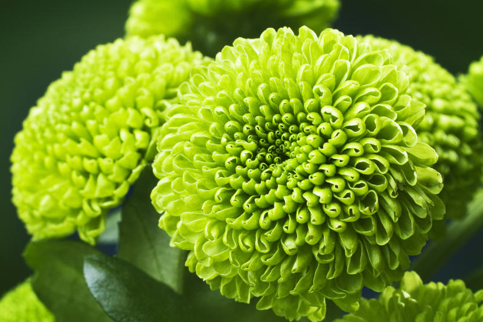
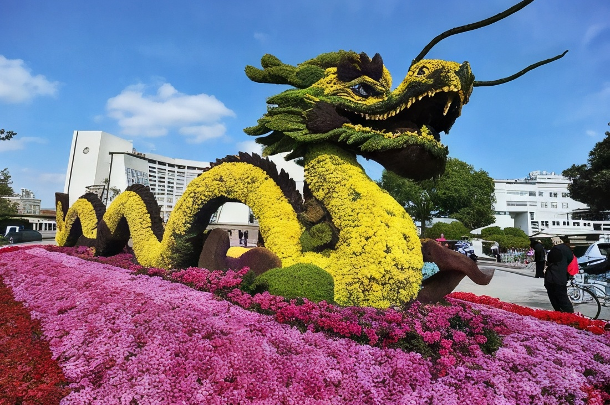
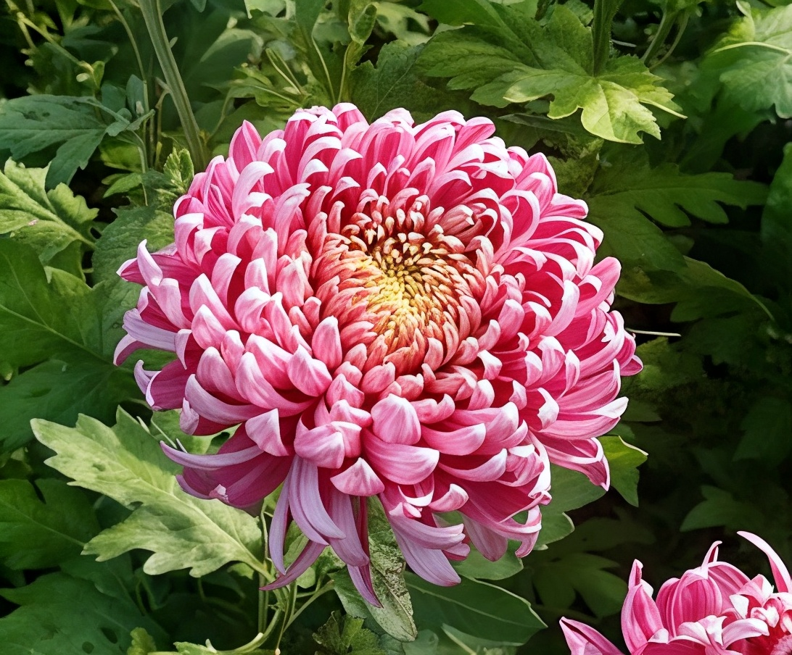

Хризантемы известны человечеству более 2500 лет. Их родиной считается Китай, где они выращивались еще в эпоху династии Шан (XVI-XI вв. до н. э.). В китайской культуре этот цветок символизировал мудрость, долголетие и гармонию.
В Японию хризантемы были завезены около VIII века, где быстро обрели популярность среди императорской знати. Императорский трон стал называться "Хризантемовый трон", а изображение цветка вошло в герб страны.
В Европу хризантемы попали в XVIII веке благодаря французскому путешественнику Пьеру Бланшару. Европейцы быстро оценили их декоративные качества, и началась селекция новых сортов.
Сегодня хризантемы являются одними из самых популярных цветов в мире. Селекционеры вывели тысячи сортов с разными формами лепестков и окраской. Их можно увидеть в парках, садах, а также в букетах и композициях для праздников.
В современной флористике хризантемы используются для оформления свадеб, юбилеев и траурных церемоний. В зависимости от цвета цветка, он может символизировать радость, благодарность, уважение или скорбь.
В медицине экстракты хризантем применяются в традиционной китайской и японской медицине. Считается, что они помогают при головной боли, воспалениях и даже улучшают зрение.
Хризантема занимает важное место в культуре Азии. В Японии каждый год в ноябре проходит Фестиваль Хризантем (Кику Мацури), во время которого можно увидеть удивительные экспозиции из живых цветов.
В Китае чай из лепестков хризантемы считается целебным напитком, укрепляющим здоровье. В Корее листья некоторых видов хризантем используют в кулинарии.
В Европе хризантемы часто ассоциируются с памятью о близких, поэтому они широко используются в траурной флористике.
Хризантемы относятся к семейству Астровые и являются многолетними или однолетними растениями. В природе они встречаются в Азии, Европе и Северной Америке.
Хризантемы обладают прочными стеблями, густыми листьями и соцветиями, которые могут достигать 25 см в диаметре. Их корневая система мощная и разветвленная.
Цветки состоят из язычковых (краевые лепестки) и трубчатых (в центре) цветков, которые образуют корзинку.
Для выращивания хризантем в саду нужно учитывать несколько факторов:
Зимой многолетние хризантемы требуют укрытия, особенно в холодных регионах.